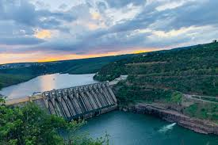

Srisailam
- The Srisailam is a one of the devtional place in Andhra pradesh
- It is a one of the most popular lord shiva temple
- And one of sakthi petam also
- It is a distict of kurnool in Andhra pradesh
- It is a most dangeries forest in Andhra pradesh Nalla malla forest
- To entrance the Srisailam to see the sakshi ganapathi temple to darshan the sakshi ganapathi temple
- Lord shiva temple is very powerful of the temple
The Srisailam is a one of the devtional place in Andhra pradesh
It is a one of the most popular lord shiva temple
And one of sakthi petam also
It is a distict of kurnool in Andhra pradesh
It is a most dangeries forest in Andhra pradesh Nalla malla forest
To entrance the Srisailam to see the sakshi ganapathi temple to darshan the sakshi ganapathi temple
Lord shiva temple is very powerful of the temple
The name devastanam is Mallikarjuna and bramarambika in devastanams
After to choose the darshan to eat a food in devastanam food sadan
To stay the Srisailam more lodges and sadan's are avalible
After darshan too see the side sings of Srisailam
All Srisailam more parks in the town differt type of parks in Srisailam
To see the rouf in Srisailam entrance cost is perhead chaild is 50Rs and elder is 80Rs
To see the the Pathalaganga river and to ride the boating also
And to see the Srisailam dam also
To see the place is chenchu lakshmi museam it's fentastic museam
To see the one of the place also paladhara and panchadhara
And to see the akkamahadevi caves also it's nice caves in Srisailam
last and beautiful place is octopus view ponit

Lord shiva temple is very powerful of the temple
The name devastanam is Mallikarjuna and bramarambika in devastanams
After to choose the darshan to eat a food in devastanam food sadan
To stay the Srisailam more lodges and sadan's are avalible
After darshan too see the side sings of Srisailam
All Srisailam more parks in the town differt type of parks in Srisailam